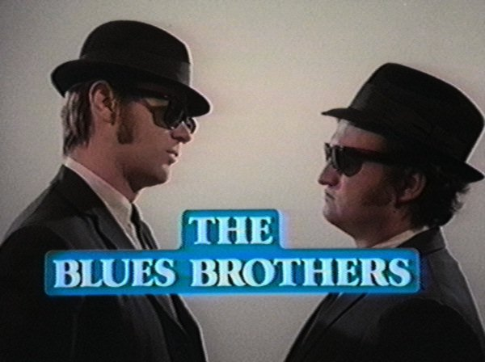
Джейк Блюз (Jake Blues) - Джон Белуши (John Belushi), вокал (24 января 1949г., Чикаго, США - 5 марта 1982г., Лос Анжелес, США); Элвуд Блюз (Elwood Blues) - Дэн Эйкройд (Dan Aykroyd), вокал, гармоника (1 июля 1952г., Оттава, Канада).
Американский актерский музыкальный дуэт.
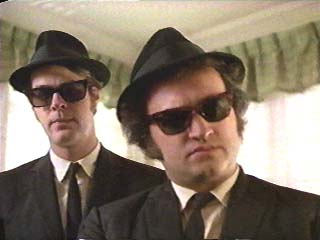
Давно увелкаясь блюзом, дуэт "Blues Brothers" со знанием дела и специфическим чувством юмора разработали имидж, представлявший добрую пародию на «золотые денечки» соул и ритм-энд-блюза 50-х: мешковатые костюмы, галстуки узкой ленточкой, фетровые шляпы, светонепроницаемые очки - все черное. Свою речь сдабривали устаревшим блюзовым слэнгом. Начали выступать в ньюйоркских клубах и кафе; часто им аккомпанировала группа “Room Full of Blues”. В 1977г. они разогревали публику перед началом съемок популярного телешоу «Концерт субботним вечером» (Saturday Night Live). На эстраде конца 70х, которую бросало то в панк, то в новую волну, Братья Блюз выглядели анохранизмом, но этот анахронизм искрилс абсурдным юмором жизнелюбия. Юмором и артистизмом «Блюз Бразерз» компенсировали ограниченность собственно музыкальных талантов настолько, что были допущены до основной эфирной части концерта. Добившись признания, «Братья…» поспешили пригласить в свою группу музыкантов, которые принимали участие в записи их любимых ритмэндблюзовых хитов: гитариста Steve "The Colonel" Cropper, бас-гитариста Donald "Duck" Dunn (ex-“Booker T.& the MG’s”), гитариста Matt “Guitar” Murphy, Willie "Too Big" Hall, Tom "Bones" Malone, Lou "Blue Lou" Marini и др. Первый альбом записан в сентябре 1978г., когда на гастролях комика Стива Мартина (Steve Martin) они еще попрежнему разогревали публику. Репертуар полностью состоял из стандартов ритмэндблюзовой эпохи. В 1979г. альбом стал платиновым, две песни из него вошли в TOP20 журнала Биллбоард (Billboard). «Блюз Бразерз» стали культовой группой. Вышедший в 1980г. фильм “Братья Блюз” за первые два месяца проката в США принес 32 млн. долларов кассовых сборов (позже сумма еще утроилась) . Слоган из фильма: “We are on a mission from God”, произнесенный суровым тоном, превратился в девиз для тех, кто всей душой стоит за блюз.Братья Блюз первыми заявляли, что их версии ритм-энд-блюзовых стандартов «гроша ломаного не стоят» в сравнении с оригиналами. Записи «Блюз Бразерз» не содержат музыкальных открытий, но мало кто сделал так много для популяризации блюза. Благодаря их усилиями возродился интерес широкой публике к музыке Ареты Фрэнклин (Aretha Franklin), Рея Чарлза (Ray Charles), Кэба Кэллоуэя (Cab Calloway), Джеймса Брауна (James Brown) и Джона Ли Хукера (John Lee Hooker). В лучшие годы в группе «Блюз Бразерз» играли ветераны блюзовой сцены, некоторые из них принимали участие в записи тех песен, которые возрождали Братья Блюз: гитарист Стив Кроппер (Steve Cropper), бассист Дональд «Дак» Данн (Donald «Duck» Dunn), гитарист Мэт «Гитар» Мерфи (Matt «Guitar» Murphy). Смерть Белуши от передозировки наркотиками, казалось, исключает малейшую возможность продолжение истории Братьев Блюз.
Однако 15 лет спустя и черные костюмы, и очки, и неподражаемая пляска с непроницаемым лицом - вновь выходят на эстраду и киноэкран. Братьев стало трое: к Дэну Эйкройду присоединились актеры Джеймс Белуши (родной брат Джона) и Джон Гудмэн (John Goodman) плюс "приемный сын" J. Evan Bonifant (дебютировавший в детском боевичке «Three Ninjas Kick Back»). В 1997г. вышел альбом с записью их большого концерта с участием звезд современного блюза и ветеранов чикагской сцены (Россию на этой блюзовой сходке представлял Сергей Воронов); снято видео под названием «Возвращение братьев Блюз»; начались съемки фильма «Братья Блюз 2000», «комедии с ритм-энд-блюзом» (по определению студии “Universal”). Режиссер - John Landis стал вместе с Д.Эйкродом соавтором сценария. Фильм вполне успешно вышел в прокат еще до начала нового тысячелетия. Новую страницу в музыкально-комедийном кинематографе он не открыл, но порадовал новой встречей с блюзовыми и ритм-энд-блюзовыми королями и королевами, а заодно представил и новичка Джонни Ланга (Johnny Lang) - все в доступном широкой публике стиле киношного бурлеска.
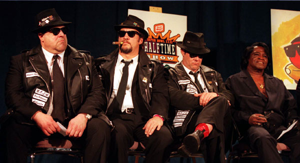
1978
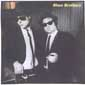
1980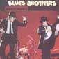
1980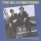
1981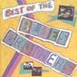
1989
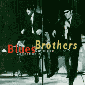
1997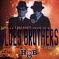
1997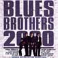
????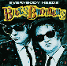
I. Выпущенный в Европе "Blues Brothers Complete" - это не "полное собрание" записей. На двух CD помещаются три альбома: "BLUES BROTHERS ORIGINAL SOUNDTRACK", "DEFINITIVE COLLECTION", и "VERY BEST OF" - плюс 2 "ране неиздававшихся трека"
II. Успех "чумовых" белых "братьев Блюз", естественно, задел за живое ревнителей "чистого" блюза. Их ответный удар представлял собой гастрольную программу "настоящих блюзовых братьев" ("REAL BLUES BROTHERS") и выпуск на фирме DCC RECORDS под тем же девизом альбома с записями классиков жанра Brownie McGHEE & Sonny TERRY, Jimmy REED, John Lee HOOKER, Memphis SLIM, LIGHTNING HOPKINS и др. Подборка, кстати, получилась весьма симпатичной. После выхода фильма (не упустив новый всплеск популярности) DCC RECORDS выпустили и второй том "REAL BLUES BROTHERS" И с точки зрения знатоков это собрание - еще более любопытно, поскольку включает в себя целый ряд достаточно редких записей, а не тот круг имен, который являетмя обязательной частью любой серьезной блюзовой коллекции.
III. Мемфисская фирма "STAX" справедливо рассудила, что музыка "BLUES BROTHERS" в немалой степени базируется на их архивах. Срочно выпущенная выборка из стаксовских архивов отправлена на рынок под ставшим "золотым" слоганом "блюз-братьев": "STAX BLUES BROTHERS" (FANTASY/STAX 1989).
IY. Гастролируя в Европе без участи солистов-актеров, музыканты блюзбэнда записали и выпустили альбом "THE BLUES BROTHERS BAND - RED, WHITE & BLUES"(WEA).
Y. Группа "BRIEFCASE BLUES - THE BLUES BROTHERS TRIBUTE BAND" играет (и выступает) в стиле "Blues Brothers" http://www.dhc.net/~schow/blues/
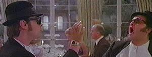
Цитатник по фильму "Братья Блюз":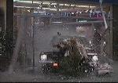
Склад материалов по BLUES BROTHERS на BLUES.RU:Несколько слов о выступлении BLUES BROTHERS на блюз-фестивале в Нотоддене-98:
все в деталях о BLUES BROTHERS 2000: http://www.Blues-Brothers-2000.com/, (то есть, еще недавно точно это было здесь)
наполни браузер блюзбразерами: http://dir.yahoo.com/Entertainment/Movies_and_Film/Titles/Comedy/Blues_Brothers__The/
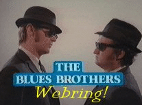
В самом деле - одни и те же картинки по разным
адресам.
Десктоп в стиле BLUES BROTHERS: http://www.cs.nwu.edu/~tommym/blues/index.html
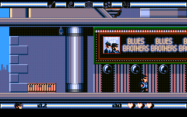
URL:http://gandolf.ml.org/blues/
или FTP
Всегда найдется человек, который скажет.что это он научил Братьев Блюз - блюзу (а может так оно и было): http://www.cs.monash.edu.au/~pringle/bluesbros/article.html (на англ.яз)